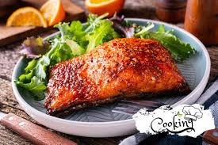

Honey Garlic Glazed Salmon

A 15-minute dinner that tastes like you actually tried.
Ingredients
- 2 salmon fillets
- 3 tbsp honey
- 2 tbsp soy sauce
- 1 tbsp lemon juice
- 3 cloves garlic (minced)
steps
- Sear: Season salmon with salt and pepper. In a pan over medium-high heat, sear the salmon skin-side up for about 4 minutes until golden.
- Flip: Turn the fillets over.
- Glaze: Whisk the honey, soy sauce, lemon, and garlic together. Pour it into the pan.
- Baste: Let the sauce bubble and thicken for 2-3 minutes while spooning it over the fish until cooked through.